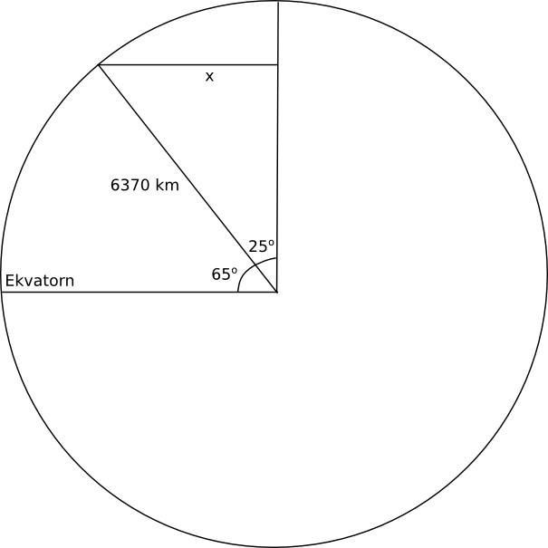

18. Sfären
Volymen för sfären eller klotet är \( V=\dfrac{4\pi r^3}{3} \) och den totala arean för sfären är \( 4\pi r^2 \).

Volymen av ett klotsegment fås via \( V=\pi h^2(r-\dfrac{h}{3}) \) och arean för kalotten är \( A=2\pi rh \) där \( h \) är höjden för kalotten.
Exempel 1 En hur lång sträcka skulle vi färdas runt jorden om vi skulle färdas längs den 65 breddgraden?
Lösning
Vi betecknar \( x \) radien vinkelrät mot jordens radie vid 65 breddgraden. För att får ett värde på \( x \) tillämpar vi trigonometri.

\( \begin{array}{rl} \textrm{Vi får att } \sin 25^{\circ} & = \dfrac{x}{6370} \\ \\ x & = 6370 \sin25^{\circ} = 2692 \textrm{ km} \\ \textrm{Omretsen är } 2\pi \cdot x & = 2\pi \cdot 2692 = 16914 \approx 17000 \textrm{ km} \\ \end{array} \)
Exempel 2 Bestäm arean av den del av jorden som är norr om 60 breddgraden.
Lösning
Vi börjar på motsvarande sätt som ovan.

Vi får att
\( \begin{array}{rl} \cos 30^{\circ} & = \dfrac{x}{6370} \\ \\ x & = 6370 \cos 30^{\circ} \\ \textrm{Höjden för kalotten får vi som } h & = r-x = 6370 - 6370\cos 30^{\circ} \\ \textrm{Och hela arean som } A & = 2\pi r h = 2 \pi \cdot 6370 (6370 - 6370\cos 30^{\circ}) \\ & = 34157116 \approx 34 200 000 \textrm{ km}^2 \\ \end{array} \)
Uppgifter
Hur många glasskulor med diametern 6,0 cm får man ur ett 1 liters paket om vi räknar med att vi kan utnyttja all glass?
Kom ihåg att 1 liter = 1 dm3.
Volymen för ett klot, \( V=\dfrac{4}{3}\pi r^3 = \dfrac{4}{3}\pi 0,3^3 = 0,1130\ldots dm^3 \).
Antal bollar \( \dfrac{1 \text{ dm}}{0,1130\ldots \text{ dm}^3} = 8,8 \) st.
Alltså 8 st hela.
- Diametern för en oskalad apelsin är 9,0 cm. Skalets tjocklek är 0,5 cm. Hur många procent av apelsinens volym är skal?
Hela apelsinens volym är \( V=\dfrac{4}{3}\pi 4,5^3 = 381,70\ldots \) cm3.
Volymen utan skal är \( V=V=\dfrac{4}{3}\pi 4^3 = 268,08\ldots \) cm3.
Den procentuella andelen skal är \( \dfrac{381,70\ldots - 268,08\ldots}{381,70\ldots} = 0,29766 \).
Alltså 29,8 %.
- En tub för tennisbollar fylls med fyra tennisbollar. Hur många procent tomrum finns det i tuben?
Volymen för cylindern är \( \pi r^2 \cdot 8r \).
Volymen för en tennisboll är \( \dfrac{4}{3}\pi r^3 \).
Förhållandet mellan volymenrna är \( \dfrac{4\cdot\dfrac{4}{3}\pi r^3}{\pi r^2 \cdot 8r} = 0,666\ldots \).
Andelen tomrum är \( 1-0,666\ldots = 0,333 \). Alltså 33,3 %.
- Totala arean för en fotboll är 15,6 dm2. Bestäm volymen av fotbollen.
Vi har att \( A=4\pi r^2 \), alltså \( r=\sqrt{\dfrac{A}{4\pi}} = \sqrt{\dfrac{15,6}{4\pi}} = 1,114\ldots \) dm.
Volymen är \( V=\dfrac{4}{3} \pi \cdot 1,114\ldots^3 = 5,793\ldots \) dm3.
Alltså 5,8 dm3
- En kub inskrivs i en sfär. Hur stor många procent utgör kubens volym av sfärens volym?
Vi betecknar radien med \( r \) och halva sidan för kuben med \( a \). Då får vi att \( a=\sqrt{r} \), alltså \( r=\dfrac{a}{\sqrt{2}} \).
Förhållandet är \( \dfrac{V_{\text{kub}}}{V_{\text{sfär}}} = \dfrac{(2a)^3}{\dfrac{4}{3}\pi (\dfrac{a}{\sqrt{2}})^3} = \dfrac{2}{\pi\sqrt{3}} = 0,36755 \).
Alltså 36,8 %.
- I en rak kon vars höjd är dubbelt så lång som diametern för bottenarean inskrivs största möjliga sfär. Bestäm förhållandet mellan sfärens och konens volymer med en tusendels decimals noggrannhet.
0,476